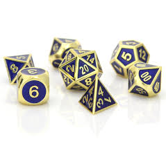

In DND their is one factor that ruins all plans, the DM and the Player. The Dice, the Dice are rolled when a player wishes to do an action (normally a D20) you add the appropriate modifier and see if you can clear the Dice Check, when players roll a perfect 20 they get what's known as a "Nat 20" or a critical success (if they cleared the Dice Check) in combat that means they roll two times the damage dice, in other ascpects of the game it simply means they complete the task flawlessly. On the oposete end of the spectrum lies the Nat 1, when rolling the Nat one you fail so bad that you normally end up harming yourself or your allies if not outright killing them. the dice add the sense of randomality to the game and help to give an equel chance for every possible outcome.